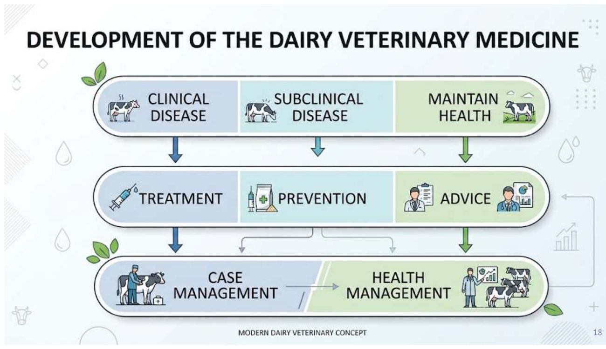
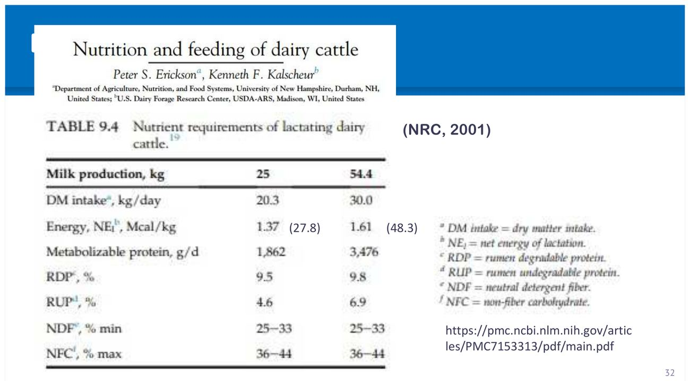
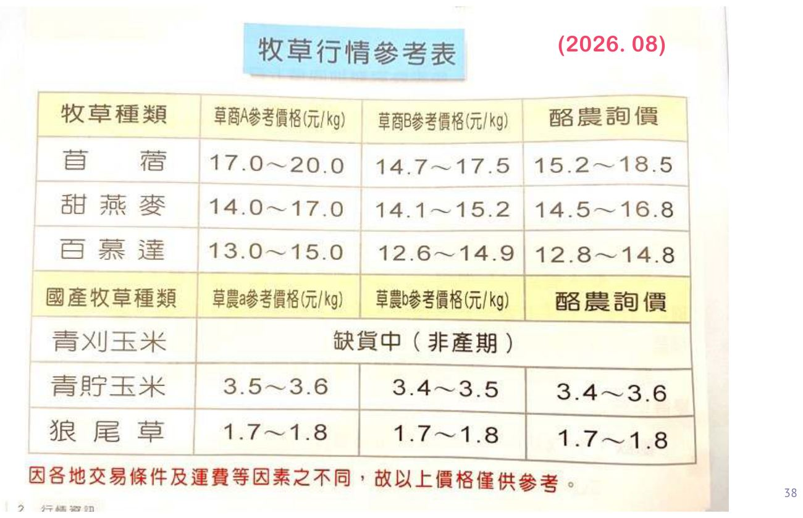
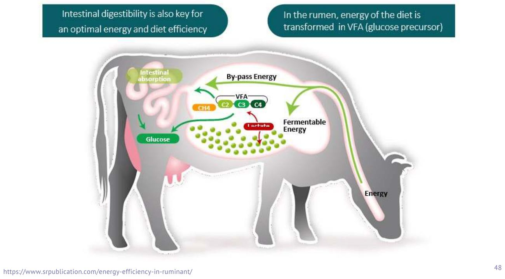
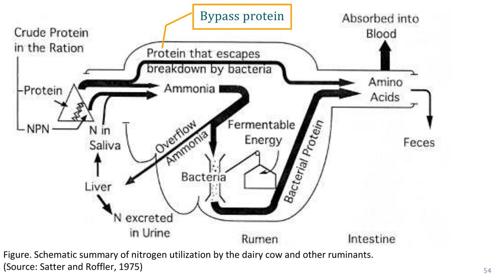

大方向與重點摘要
- 這章在講什麼
- 講義叫「消化生理」，內容是把反芻動物的前腸發酵（foregut fermentation）接到乳牛生產醫學（dairy production medicine）：牛一生怎麼走、每天要喝多少水、能量與蛋白質怎麼算、牧場怎麼配飼料（TMR）。講義的後段（轉換期、低血鈣、DCAD）放在姊妹頁。
- 為什麼重要
- 牛羊獸醫的工作重心是牛群健康（herd health）與疾病預防，而大部分乳牛代謝病（低血鈣、酮症、瘤胃酸中毒、皺胃移位）都從「吃錯」開始。看懂日糧，才看得懂後面每一個疾病。
- 這章要抓的重點
-
- 分類：偶蹄目 Artiodactyla → 反芻亞目 Ruminantia（牛、羊）；駱駝、羊駝屬胼足亞目 Tylopoda，豬屬豬型亞目 Suina。
- 生產醫學：從「個別動物診療」擴展到牛群健康管理與監控；高產乳靠飼養管理、環境、遺傳育種三支柱。
- 乳牛一生：初乳 3–5 天 → 代乳到 8 週 → 13–15 月齡、> 330–350 kg 配種 → 懷孕約 280 天 → 初產 24–26 月齡 → 泌乳 → 乾乳 45–60 天。
- 水：最重要的營養素；講義公式 每日飲水（L）＝ DMI（kg）× 6 ＋ 產乳量（kg）；熱緊迫時每 kg DMI 需 10–12 L。
- 能量：以泌乳淨能（NEL）表示；每 1 kg 乳（4% 乳脂）需 0.74 Mcal NEL。
- 飼料：粗料（纖維高、能量低）vs 精料；豆科（苜蓿）蛋白質與礦物質較高，因為有固氮根瘤菌。
- TMR：所有原料混成單一均質飼料任食，五大好處（均衡、防挑食、瘤胃發酵穩定、適口性、省人力）。
- VFA：乙酸 ≈ 65%、丙酸 ≈ 15%、丁酸 ≈ 10%；瘤胃產生全消化道 84% 的 VFA；反芻動物是「脂肪酸動物」；纖維 → 乙酸 → 乳脂率↑。
- 蛋白質：RDP、RUP（bypass protein）、IIP；RDP 被分解成氨 → 菌體蛋白；NASEM 2021：RDP 60–65%、RUP 35–40%（佔 CP）。
- 容易混淆
- 乾乳期 vs 轉換期：乾乳期是停止泌乳的 45–60 天；轉換期是產前 21 天到產後 21 天，跨乾乳末期與泌乳初期。RDP vs RUP：RDP 在瘤胃被菌分解（餵菌），RUP 逃過分解直接到小腸（餵牛），RUP 也叫 bypass protein。粗料 vs 精料：分類依據是纖維與能量，不是「乾或濕」。NRC 表的 RDP 9.5% 是佔乾物質的比例，講義 60–65% 是佔粗蛋白的比例，兩者不衝突（見第 7 節）。
- 考試可能怎麼問
（推測） - 反芻亞目與駱駝的分類差異；水牛兩型的染色體數與用途；生產醫學的定義；乳牛生產週期各數字；飲水公式計算；1 kg 乳的 NEL；豆科 vs 禾本科；TMR 優點；VFA 三種比例與「脂肪酸動物」；結構性碳水化合物與乳脂率；蛋白質三分類與 NASEM 比例；氮循環圖（bypass protein）。
內容以老師講義為主體。標示「補充」的段落（含「讀書補充Note」）是講義以外的延伸；標示「推測」的是依講義強調處推測的出題方向，不是考古題。考試範圍以老師上課為準。圖片為老師講義截圖。
碳水 → VFA；蛋白 → 氨 → 菌體蛋白
小腸消化菌體蛋白＋RUP
補充：一句話記法——「先餵菌，再餵牛」。日糧設計的重點不是飼料本身有多少醣或蛋白，而是瘤胃菌會把它變成什麼。
草食動物與反芻動物分類 Herbivores & Taxonomy
先分清楚「誰是真正的反芻動物」：牛、水牛、綿羊、山羊是；駱駝、羊駝會反芻，但不在反芻亞目。
草食動物 Herbivores看過
草食動物可再細分為食草動物（graminivores）、食葉動物（folivores）、食果動物（frugivores）、食穀動物（granivores）等；很多草食動物會吃植物的不同部位（根、種子），溫帶地區的食性也會隨季節改變（p.2）。
偶蹄目的三個亞目必考
| 亞目 Suborder | 代表科屬 | 重點 |
|---|---|---|
| 反芻亞目 Ruminantia | 牛科（洞角科）Bovidae：牛亞科 Bovinae（牛屬 Bos、水牛屬 Bubalus）、羊亞科 Caprinae（羊屬 Ovis、山羊屬 Capra） | 本科目的主角 |
| 豬型亞目 Suina | 豬 | 單胃動物 |
| 胼足亞目 Tylopoda | 駱駝科 Camelidae：駱駝屬 Camelus、羊駝屬 Lama | 同屬偶蹄目，但不屬於反芻亞目 |
補充：駱駝科也會反芻，但胃只有三個胃室（沒有明確的瓣胃），所以常被稱為「假反芻動物（pseudoruminant）」。講義只列分類，沒有說胃室數。
牛：Bos taurus 的亞種理解
- 牛科（洞角科）Bovidae → 牛亞科 Bovinae → 牛屬 Bos → 家牛 Bos taurus（p.7）。
- 亞種：B. t. primigenius（原牛）、B. t. taurus（歐洲牛）、B. t. indicus（瘤牛）。
補充：瘤牛耐熱、耐蜱，熱帶地區常與歐洲牛雜交；台灣乳牛以荷蘭牛（Holstein）為主。
水牛 Water buffalo必考
| 沼澤水牛 Swamp buffalo | 河川水牛 River buffalo | |
|---|---|---|
| 學名 | Bubalus bubalis carabanesis | Bubalus bubalis arnee |
| 染色體 | 48 條 | 50 條 |
| 分布 | 東南亞 | 印度、義大利、中東 |
| 用途 | 役用（draft animal） | 乳用（dairy production） |
記法（補充）：「河川流的是牛奶、數字比較大（50）」；沼澤水牛是拖犁的。
反芻動物的定義必考
反芻動物（偶蹄目、反芻亞目）是偶蹄、草食的放牧或啃食性哺乳類，能把吞下的食物逆嘔回口腔再咀嚼，再送進特化的胃（如瘤胃），靠微生物發酵從植物中萃取養分。因為發酵發生在消化道前段，所以稱為前腸發酵（foregut fermentation）（p.12）。
補充：馬雖然在圖中列為單胃，但它靠盲腸、大結腸做後腸發酵；反芻動物是前腸發酵，所以微生物蛋白能在後面的小腸被消化吸收，馬就比較吃虧。
乳牛生產醫學 Dairy Production Medicine
牧場獸醫的角色已經從「看病的牛」轉成「讓整群牛不生病、牧場賺錢」。
為什麼需要生產醫學必考
- 背景：全球關注動物性乳肉產品的食品安全、抗藥性（antimicrobial resistance）、新興與人畜共通疾病 → 現代牧場獸醫不能只做個別動物的診斷治療（p.15）。
- 大動物獸醫的工作要整合：獸醫流行病學、畜舍工程、動物營養、牧場經營經濟、人事管理、紀錄建立（p.16）。
- 要理解整個 「從牧場到餐桌（farm-to-table）」的過程，協助牧場達成年度經營目標 → 這就是生產醫學（production medicine）的新概念（p.17）。
- 牛羊獸醫的工作在所有經濟動物獸醫中很特別：除了個別動物（individual animals）的診療，更要管理與監控牛群健康（herd health），以疾病預防提高牧場經濟效益（p.19）。

p.18 這張圖由上往下是「獸醫面對的問題 → 做的事 → 管理層次」。越往右越不是「看病」：亞臨床疾病要靠預防、健康的牛要靠建議與健康管理。考申論可以用這三條線回答「生產醫學和傳統獸醫有何不同」（推測）。
酪農業的三大支柱必考
酪農業是集約化畜牧業，目標是養出高產乳量、好乳質的牛以達最佳經濟效益，要靠（p.20–22）：
① 飼養管理
良好的飼養管理觀念與技術：均衡日糧、適當管理、疾病預防與控制
② 飼養環境
合適的飼養環境：牛舍設計與相關設施
③ 遺傳育種
Genetics and breeding
乳牛生產週期 Dairy Cattle Production Lifecycle
把乳牛一生的數字串成一條時間軸：之後講犢牛、配種、乾乳、轉換期，都是在這條線上找位置。
生產週期（講義 p.23）必考
初乳 3–5 天
到 8 週齡
13–15 月齡
BW > 330–350 kg
≈ 280 天
24–26 月齡
產前體重 > 575 kg
- 公犢（bull calf）：出生 3–5 天離開牛群 → 肥育場育肥到 24 月齡、600 kg → 屠宰；少數留作種公牛。
- 分娩 → 泌乳 → 產後配種 → 乾乳 → 分娩，是一個循環（講義圖中圈起來的部分）。
〈牛媽媽的生活史〉（李國華）理解
李國華老師的一頁圖解，用牧場的叫法說同一個循環，順便把各階段的牛怎麼稱呼講清楚：
| 步驟 | 稱呼 | 內容 |
|---|---|---|
| 1 | 犢牛 | 剛出生約 40 kg；乳牛要經過生長、成熟、配種、懷孕、分娩才會產乳。分娩後前 5 天的乳叫初乳，含豐富免疫球蛋白，必須餵給犢牛 |
| 2 | 仔牛 | 5 天後母牛的乳供人類（鮮乳），犢牛改喝代用乳，此時稱仔牛 |
| 3 | 女牛 | 喝約 2 個月代用乳後斷乳，改吃優質牧草與飼料 |
| 4 | 大女牛 | 13–16 個月，體重達 350 kg 以上、成熟且穩定發情（發情週期約 21 天）時人工授精 |
| 5 | 懷孕牛 | 懷孕期約 283 天 |
| 6–7 | 第一胎泌乳牛 | 分娩後才有乳；每天早晚各擠乳一次，每天可產約 20 kg 以上，泌乳期約 300 天 |
| 8 | — | 產後約 42 天再度發情可配種；懷孕後在分娩前 60 天乾乳；再次分娩就是第二胎泌乳牛 |
| 9 | — | 新生犢牛若是母的，就跟牛媽媽一樣進入產乳循環 |
兩份都照列，考試以授課老師的講義為準。
| 項目 | 消化生理講義 p.23 | 牛媽媽的生活史 |
|---|---|---|
| 初乳 | 3–5 天 | 前 5 天 |
| 代乳期 | 到 8 週齡 | 約 2 個月 |
| 配種 | 13–15 月齡、> 330–350 kg | 13–16 月齡、> 350 kg |
| 懷孕期 | ≈ 280 天 | 約 283 天 |
| 乾乳 | 45–60 天 | 分娩前 60 天 |
補充：把數字串起來會發現乳牛的理想節奏是「一年一胎」：泌乳約 300 天＋乾乳約 60 天 ≈ 365 天；所以產後約 42 天回到發情後就要盡快配上，分娩間隔拉長就是少賺一胎。
讀書補充Note - 育成目標與繁殖管理數字（季昭華、許凱程老師 2020–2022 共筆）
1. 育成目標（季昭華）
- 荷蘭乳牛以 24 月齡生第一胎視為發育成熟；超過太耗成本，提前太多乳腺可能沒發育好。
- 最高目標：體高 142 cm、體重 590 kg；若一頭牛才 300 多公斤一定有問題。
- 8–10 月齡初發情，12–15 月齡配種（第一次發情通常不明顯，太早配種生殖系統可能未發育完全）；發情週期 21 天。
- 許凱程：建議 12–14 月齡配種；分娩後休息兩個月再配（voluntary waiting period）。
2. 繁殖目標（季昭華，大動物獸醫很重要的表）
- 分娩後初回發情：45 日以內；初回授精：60–70 日（產後 21 天內發情不配，讓子宮休息）。
- 初回受胎率只有 50–60% → 第 60 天第一次人工授精、21 天後再一次；授精 > 3 次未成功 → 淘汰。
- 標準泌乳 305 天、乾乳 50–60 天，分娩間隔 355–360 天（高泌乳牛可到 395 天）；乾乳期過長牛會過胖、可能難產。
- 適當授精時機：排卵前 4–6 小時、發情終了 6 小時（約 24 小時內）；許凱程：看到駕乘穩定才算發情，早上看到下午配、下午看到晚上配。
- 妊娠診斷：直腸檢查 35–40 日齡可診斷，60–70 日再確認（40 日前有 5–10% 胚死亡）。
3. 牛的溫度範圍（季昭華）
| 下限 | 上限 | |
|---|---|---|
| 子牛 | 13°C | 25°C |
| 育成牛 | −5°C | 25°C |
| 乾乳牛 | −14°C | 25°C |
| 泌乳高峰牛 | −25°C | 25°C |
上限都是 25°C：乳牛耐冷、怕熱，熱緊迫 → 產量下降（台灣夏天的大問題）。
讀書補充Note - 許凱程老師的乳牛 KPI 與 BCS 目標（2020–2022 共筆）
| KPI | 目標 | 意義 |
|---|---|---|
| 分娩時 BCS | < 3.75 | 太胖產後代謝病多（胎衣滯留、子宮炎、卵巢囊腫） |
| 分娩後 80 天 BCS | 2–3.5 | 泌乳高峰（產後約 2 個月）不要低於 2.5；乾乳前不要高於 3.5 |
| 瘤胃 pH | 5.8–7.0 | — |
| 乳中尿素氮（MUN） | 19–22 mg/dL | 過高代表日糧蛋白質過多，影響卵巢與子宮、降低繁殖效率 |
| 反芻時間 | 8–11 小時／天 | 低於約 420–440 分鐘可能是瘤胃過酸或熱緊迫 |
| 乳蛋白 | 3.5–3.8（3.2–3.4） | 括號為老師認為的標準值 |
| 乳脂肪 | 3.4–3.6（3.5–3.8） | 偏低可能是瘤胃過酸 |
| BHBA | < 1.4 mmol/L | 高於可能有酮症 |
| 乳脂／乳蛋白比 | < 1.5 | > 1.5 代表開始能量不平衡 |
| 體溫 | 37.8–38.6°C | （高老師講義寫 38.0–39.0°C） |
四大乳牛疾病：乳房炎、跛行、不孕、產後代謝性疾病；美國農業部 2007 調查：臨床乳房炎 16.5%、跛足 14%、不孕 12.9%，占大部分永久淘汰與三分之一死亡。三個重要傳染病：結核、副結核、牛流行熱。
管理指標、必需營養素與水 Water
水排在所有營養素第一位：乾物質採食量（DMI）和產乳量都直接決定飲水需求。
乳牛管理的關鍵指標（p.25）必考
- 維持最大乾物質採食量（dry matter intake, DMI）
- 配製均衡的日糧（balanced ration）
- 達到最大消化率與吸收率
五大必需營養素（p.26）必考
補充：維生素只列 A、D、E，因為 B 群與 K 可由瘤胃微生物合成，C 由肝臟合成；脂溶性 A、D、E 需由飼料（尤其乾草儲存後會流失）補充。
每日飲水量必考
每日飲水量（L）＝ DMI（kg/天）× 6 ＋ 產乳量（kg/天）
| 情境 | 需水量（講義） |
|---|---|
| 泌乳牛，一般 | 每 kg DMI 4–5 L；每產 1 kg 乳另加 3–5 L |
| 非泌乳牛（DMI 10 kg/天） | 約 40 L/天 |
| 日產 16–20 kg 乳 | 另加約 70 L |
| 日產 35 kg 乳 | 總飲水量接近 100 L |
| 高溫、熱緊迫 | 每 kg DMI 10–12 L（p.28） |
| 涼爽（< 20°C） | 每 kg DMI 3–4 L |
同一張投影片（p.27）寫了「每 kg DMI 4–5 L＋每 kg 乳 3–5 L」與公式「DMI × 6 ＋ 產乳量」，兩者算出來會差很多。例：DMI 20 kg、日產 30 kg 乳 → 公式：20 × 6 ＋ 30 = 150 L；逐項：20 × 4.5 ＋ 30 × 4 = 210 L。講義原文如此，計算題用講義框起來的公式；若老師上課有說明，以上課為準。
- 好的飲水必須新鮮、乾淨、涼爽，而且牛隻容易取得、任飲（ad libitum）（p.29）。
補充（臨床）：乳汁約 87% 是水，所以飲水不足最先反映在產乳量下降與 DMI 下降；台灣夏季熱緊迫時，水槽數量、水溫、清潔度是牧場巡視時必看的項目。
讀書補充Note - DMI 是什麼？怎麼算？飲水量與常見題型
1. DMI 是什麼
- DMI ＝ dry matter intake，乾物質採食量：牛每天吃進的飼料扣掉水分後剩下的重量。
- 飼料含水量差很多（乾草少、青貯玉米與啤酒粕多），只看原樣重不準，所以營養需求一律用乾物質計算。
- 計算：DMI（kg）＝ 原樣採食量（kg）× 乾物質百分比（DM%）。例：吃 50 kg TMR（原樣）、乾物質 50% → DMI ＝ 50 × 0.5 ＝ 25 kg。（DM% 換算為補充，講義沒有。）
2. 為什麼要「維持最大 DMI」
- 吃得多才有足夠的能量與蛋白質產乳。
- NRC 表：日產 25 kg 乳時 DMI 20.3 kg；日產 54.4 kg 乳時 DMI 30.0 kg。產乳增加 2.2 倍，DMI 只多 1.5 倍 → 只能提高能量密度（多給精料）→ 高產牛易酸中毒、負能量平衡（見轉換期頁）。
3. 三個管理指標與五大營養素
- 管理指標：最大 DMI、均衡日糧、最大消化率與吸收率。
- 五大必需營養素：水、能量、蛋白質、維生素、礦物質；水排第一，因為乳汁約 87% 是水。
- 維生素只列 A、D、E：B 群與 K 由瘤胃微生物合成、C 由肝臟合成；脂溶性 A、D、E 要由飼料補（乾草放久會流失）。
4. 每日飲水量怎麼算
- 講義公式：飲水量（L）＝ DMI × 6 ＋ 產乳量。例：DMI 20 kg、日產 30 kg 乳 → 20 × 6 ＋ 30 ＝ 150 L。
- 講義情境表（另一套算法）：泌乳牛每 kg DMI 4–5 L、每產 1 kg 乳加 3–5 L；非泌乳牛 DMI 10 kg 約 40 L（每 kg DMI 4 L）。同例逐項算：20 × 4.5 ＋ 30 × 4 ＝ 210 L，與公式不一致。
- 熱緊迫：每 kg DMI 10–12 L；涼爽（< 20°C）：每 kg DMI 3–4 L。
- 計算題用框起來的公式；老師上課若有改，以老師為準。
5. 可能的出題方向（推測）：本站收錄的歷屆國考只有「獸醫傳染病學」，其中沒有 DMI 與飲水量的題目；其他考科（營養與代謝相關的科目）可能會考，但題庫尚未收錄，無法確認。以下依講義推測。
- 名詞解釋：DMI；為什麼用乾物質計算。
- 簡答：三個管理指標、五大營養素、為什麼維生素只列 A、D、E。
- 計算：給 DMI 與產乳量，算每日飲水量。
- 情境：夏季熱緊迫時為什麼加強水槽（數量、水溫、清潔度）；飲水不足為什麼最先看到乳量下降。
能量需求 Energy & NEL
乳牛的能量用「泌乳淨能」計算：記住 1 kg 乳要 0.74 Mcal，就能估一頭牛每天要吃多少能量。
能量來源與單位必考
- 能量是所有身體功能的驅動力；飼料中的碳水化合物是乳牛主要能量來源。
- 脂肪（脂質）可提供部分能量，但不是必需的。
- 乳牛能量需求常以泌乳淨能（Net Energy for Lactation, NEL）表示。
- 生產 1 kg 生乳（4% 乳脂）需要 0.74 Mcal NEL（p.31）。
NRC（2001）泌乳牛營養需求表（p.32）理解
| 產乳量（kg/天） | 25 | 54.4 | 這個數字代表什麼 |
|---|---|---|---|
| DMI（kg/天） | 20.3 | 30.0 | 每天吃進的乾物質 |
| NEL（Mcal/kg DM） | 1.37 (27.8) | 1.61 (48.3) | 每 kg 乾物質要含多少能量；括號＝每天總量（20.3 × 1.37 ≈ 27.8 Mcal） |
| 代謝蛋白（g/天） | 1,862 | 3,476 | 真正到小腸被吸收的蛋白（菌體蛋白＋RUP） |
| RDP（% DM） | 9.5 | 9.8 | 瘤胃可分解蛋白佔日糧乾物質的 % |
| RUP（% DM） | 4.6 | 6.9 | 過瘤胃蛋白佔日糧乾物質的 % |
| NDF（%，最低） | 25–33 | 25–33 | 中性洗滌纖維下限：纖維不能太少（瘤胃健康） |
| NFC（%，最高） | 36–44 | 36–44 | 非纖維碳水化合物上限：澱粉糖不能太多（防酸中毒） |

- 乳的能量：25 kg × 0.74 = 18.5 Mcal；表上每天總共 27.8 Mcal → 剩下約 9 Mcal 是維持需要。產乳越多，維持佔的比例越小。
- 高產牛「吃不下」：產乳量增加 2.2 倍，DMI 只多 1.5 倍 → 只能提高每 kg 飼料的能量密度（1.37 → 1.61），也就是多給精料。這就是高產牛容易出現瘤胃酸中毒、負能量平衡的根源。
- RUP 比例上升：RUP 從 4.6% 升到 6.9%，佔蛋白的比例從約 33% 升到約 41%；菌體蛋白有上限，高產牛要靠更多過瘤胃蛋白補足。
- NDF 有下限、NFC 有上限，而且兩種產量都一樣：再高產也不能犧牲瘤胃健康。
飼料分類與牧草 Feeds & Forages
飼料只分兩大類：纖維高能量低的粗料、碳水或蛋白高纖維低的精料。台灣用的牧草要能分出禾本科與豆科。
粗料 vs 精料必考
| 粗料 Roughages / Forages | 精料 Concentrates | |
|---|---|---|
| 定義 | 纖維高、能量低 | 碳水化合物或蛋白質高、纖維低 |
| 例子 | 各種牧草、乾草、青割與青貯玉米 | 玉米、大麥、大豆粕 |
台灣常用牧草：禾本科 vs 豆科必考
| 禾本科 Grasses | 豆科 Legumes | |
|---|---|---|
| 代表 | 百慕達草（Bermuda hay）、燕麥（oat hay）、盤固拉草（Pangola hay）、梯牧草（Timothy hay）、青割玉米（green-chop corn）、狼尾草（Napier grass） | 苜蓿草（alfalfa hay） |
| 蛋白質、礦物質 | 較低 | 較高 |
| 原因 | 沒有固氮根瘤菌 | 共生的固氮根瘤菌（rhizobia）能利用大氣中的氮合成植物蛋白 |
補充（臨床）：苜蓿鈣與鉀含量高，乾乳後期日糧通常要限制，這和下一頁的低血鈣與 DCAD 直接相關。
牧草價格（2026 年 8 月）看過

看點（補充）：進口乾草的單價是國產狼尾草的近 10 倍，但國產青割料含水量高，換算成乾物質後差距會縮小；牧場配方要比較的是「每 kg 乾物質、每單位營養」的成本。
完全混合日糧 Total Mixed Ration (TMR)
TMR 讓牛「每一口都吃到一樣的配方」，這是穩定瘤胃發酵最直接的工具。
定義必考
TMR 是依營養需求配製的完全日糧：把所有原料（精料、優質粗料、農產副產物）混合成均勻的混合物，讓牛任食（ad libitum）。不同於傳統把精料與粗料分開餵的方式（p.39）。
五大好處（p.42–43）必考
| 好處 | 說明 |
|---|---|
| 1. 營養攝取均勻均衡 | 完全日糧，每頭牛吃到均勻且營養均衡的飼料 |
| 2. 防止挑食 | 牛無法從飼料中挑出特定原料 |
| 3. 瘤胃發酵穩定 | 攝取均衡 → 瘤胃發酵穩定 → 飼料效率↑、產乳量與日增重↑、乳質與肉質改善 |
| 4. 提高適口性 | 整體飼料更容易被接受 |
| 5. 省人力、提高效率 | 尤其搭配機械化時 |
記法（補充）：「均、挑、穩、口、工」。其中 2 → 3 是因果：不能挑食 → 每口粗精比一樣 → 瘤胃 pH 不會忽高忽低。
牧場 TMR 電腦配方實例（p.40）理解
泌乳牛共 106 頭，分低產、高產各 53 頭；日配量為全組每天的總量（kg，原樣重），平均＝每頭每天（kg）。紅字為兩組不同的項目。
| 原料 | 低產 日配量 | 低產 每頭 | 高產 日配量 | 高產 每頭 |
|---|---|---|---|---|
| 百慕達乾草 | 110 | 2.1 | 125 | 2.4 |
| 梯牧乾草 | 50 | 0.9 | 50 | 0.9 |
| 苜蓿乾草 | 185 | 3.5 | 200 | 3.8 |
| 燕麥乾草 | 200 | 3.8 | 200 | 3.8 |
| 飼料（精料） | 180 | 3.4 | 190 | 3.6 |
| 玉米酒粕 | 50 | 0.9 | 50 | 0.9 |
| 豆殼 | 50 | 0.9 | 50 | 0.9 |
| 麩皮 | 30 | 0.6 | 30 | 0.6 |
| 玉米片 | 100 | 1.9 | 140 | 2.6 |
| 啤酒粕 | 200 | 3.8 | 200 | 3.8 |
| 合計（自行加總） | 1,155 | 約 21.8 | 1,235 | 約 23.3 |
高產組多出來的主要是玉米片 +40 kg（澱粉、能量）、苜蓿與百慕達各 +15 kg、精料 +10 kg：對應第 6 節「高產牛吃不下，只能提高能量密度」。玉米酒粕、啤酒粕、豆殼、麩皮都是農產副產物，就是 TMR 定義裡的 agricultural by-products。表上是原樣重，啤酒粕這類濕料含水多，換成乾物質會小很多。
揮發性脂肪酸與碳水化合物 VFA
反芻動物吸收的不是葡萄糖，而是瘤胃菌發酵出來的脂肪酸：這是牠和豬最根本的差別。
VFA 是主要能量來源必考
- 飼料碳水化合物被瘤胃微生物發酵成短鏈脂肪酸（SCFAs），也就是揮發性脂肪酸（VFAs），是乳牛的主要能量來源，也是糖質新生（gluconeogenesis）的受質（p.44）。
- 組成：乙酸（acetate）≈ 65%、丙酸（propionate）≈ 15%、丁酸（butyrate）≈ 10%。
- 瘤胃產生的 VFA 約佔全消化道 VFA 的 84%（p.45）。
單胃動物（如豬）把碳水化合物以單醣吸收利用 → 「醣類動物（sugar animals）」；反芻動物則被稱為「脂肪酸動物（fatty acid animals）」（p.45）。

三種 VFA 的角色（補充）理解
| VFA | 比例（講義） | 主要去向（補充） |
|---|---|---|
| 乙酸 | ≈ 65% | 乳脂合成的主要前驅物（講義 p.47 明寫）；也是周邊組織能量 |
| 丙酸 | ≈ 15% | 在肝臟做糖質新生，是反芻動物葡萄糖的主要來源 → 乳糖 → 決定乳量 |
| 丁酸 | ≈ 10% | 瘤胃上皮的能量來源，轉成 β-羥丁酸（BHB）（酮體） |
補充：講義只寫「VFA 是糖質新生的受質」，沒有指名丙酸；教科書上糖質新生的主要受質是丙酸。乙酸與丁酸不能淨生成葡萄糖。
結構性碳水化合物與乳脂率必考
乳牛可利用的碳水化合物大致分兩類，講義說明的是第一類結構性碳水化合物（structural carbohydrates）（p.47–48）：
（結構性碳水）
瘤胃菌發酵慢
但 VFA 中乙酸比例較高
→ 乳脂率↑
| 結構性碳水化合物（講義） | 非結構性碳水化合物（補充） | |
|---|---|---|
| 來源 | 粗料纖維（NDF） | 精料的澱粉、糖（NFC） |
| 發酵速度 | 慢 | 快 |
| 能量（NEL） | 較低 | 較高 |
| VFA 型態 | 乙酸比例高 | 丙酸比例高 |
| 對乳 | 乳脂率↑ | 乳量↑，但過量時乳脂率↓ |
| 過量的風險 | 能量不足 | 瘤胃 pH↓ → 瘤胃酸中毒（含亞急性 SARA）、蹄葉炎 |
補充（臨床）：牛群乳脂率突然下降、乳蛋白率接近甚至超過乳脂率（脂蛋比倒轉），要先懷疑日糧纖維不足或精料過多；這就是第 6 節 NRC 表限制 NDF 下限、NFC 上限的原因。
讀書補充Note - VFA 是什麼？為什麼叫「脂肪酸動物」？
1. VFA 是什麼、怎麼來的
- 碳水化合物（纖維、澱粉）在瘤胃被微生物發酵成短鏈脂肪酸（SCFAs）＝揮發性脂肪酸（VFAs）：乙酸（C2）≈ 65%、丙酸（C3）≈ 15%、丁酸（C4）≈ 10%，其餘為少量其他 VFA（補充）。
- 瘤胃產生的 VFA 約佔全消化道 VFA 的 84%。
- 發酵同時產生 CO₂ 與甲烷（CH₄）；甲烷排出等於損失能量（講義圖上的 CH₄ 箭頭）。
2. 為什麼叫「脂肪酸動物」
- 單胃動物（豬）：碳水化合物在小腸變單醣（葡萄糖）吸收 → 醣類動物（sugar animals）。
- 反芻動物：碳水化合物先在瘤胃被發酵，吸收的主要是 VFA → 脂肪酸動物（fatty acid animals）。
- 結果：腸道吸收到的葡萄糖很少，血糖要靠肝臟糖質新生（gluconeogenesis）自己做；所以反芻動物血糖參考值低（50–75 mg/dL）、沒有餐後高血糖（見羊理學檢查頁）。（補充）
3. 看圖：能量走兩條路
- 瘤胃中：可發酵能量（fermentable energy）→ 微生物 → VFA（C2、C3、C4）；一部分以甲烷散失。
- 過瘤胃：不被瘤胃發酵的能量（by-pass energy）直接到小腸，被消化成葡萄糖吸收；所以小腸消化率也是能量效率的關鍵。
- 瘤胃 pH 掉太低時，乳酸（lactate）堆積 → 酸中毒。
4. 三種 VFA 的去向
- 乙酸：乳脂的主要前驅物，也是周邊組織能量。
- 丙酸：肝臟糖質新生，是反芻動物葡萄糖的主要來源 → 乳糖 → 決定乳量。
- 丁酸：瘤胃上皮的能量來源，轉成 β-羥丁酸（BHB，酮體）。
- 講義只寫「VFA 是糖質新生的受質」，未指名丙酸；教科書上乙酸、丁酸不能淨生成葡萄糖。
5. 臨床關聯與可能題型（推測）
- 粗料多 → 發酵慢、乙酸比例高 → 乳脂率上升。
- 精料多 → 發酵快、丙酸比例高 → 乳量上升；但過量使 pH 下降 → 瘤胃酸中毒（SARA）、蹄葉炎、乳脂率下降。
- 乳脂率突然掉、乳蛋白率接近或超過乳脂率 → 先懷疑纖維不足或精料過多。
- 丙酸不足、負能量平衡 → 脂肪動員、肝臟無法完全氧化 → 酮體增加（見轉換期頁）。
- 題型：三種 VFA 比例與用途配對；為什麼是脂肪酸動物、與豬的差別；粗精比改變對 VFA 與乳成分的影響；精料過多為何造成酸中毒。
讀書補充Note - 牛胃怎麼運作？瘤胃 pH 影響什麼？很重要嗎？
1. 牛胃的運作過程
- 吃進：咀嚼少、混入唾液（pH 8.0–8.5）後吞下，進入瘤胃。
- 瘤胃發酵（90–120 L，氣、液、固三層）：微生物把纖維、澱粉發酵成 VFA、CO₂、甲烷。
- 反芻：食團逆嘔回口腔再咀嚼、混唾液、吞回；每天至少 7 小時，唾液至少 130–150 L/天。
- 網胃（蜂巢狀、緊貼橫膈，金屬異物易停在這裡）→ 瓣胃（吸收水分與 VFA，補充）→ 皺胃（真胃，胃酸與消化酶，消化微生物蛋白，補充）→ 小腸（吸收胺基酸與過瘤胃能量）。前胃排空約 48–72 小時（共筆）。
- 仔牛吸乳靠食道溝反射，乳直接進皺胃；桶餵或灌食時食道溝不一定閉合，乳漏進瘤胃發酵。
2. 維持 pH 的邏輯：纖維夠長 → 反芻多 → 唾液多（碳酸鹽、磷酸鹽緩衝）→ pH 穩定在 6.5–6.8；纖維太短或精料太多 → 反芻少、唾液少、VFA 產得快 → pH 下降。
3. pH 下降會影響什麼
- 微生物：分解纖維的菌被抑制，耐酸的產乳酸菌（如 S. bovis）增生（補充）。
- VFA 與乳成分：丙酸比例高、乙酸比例低 → 乳脂率下降。
- 採食量：DMI 下降 → 負能量平衡。
- 瘤胃壁與肝：瘤胃炎 → 細菌與內毒素進門脈 → 肝膿瘍。
- 蹄：乳酸堆積 → 內毒素 → 微血管血栓 → 蹄葉炎（延遲出現，見下一則 Note）。
- 水與蠕動：乳酸提高滲透壓 → 水被吸進瘤胃 → 脫水、蠕動停滯。
4. 很重要嗎：是反芻動物營養與疾病的中心；NRC 表限制 NDF 下限與 NFC 上限、TMR 降低酸中毒風險，都是為了保護 pH。乳脂率是便宜的監測指標（共筆：4–4.2 優質、3.6–3.8 一般、< 3.5 不好）。
5. 數字各來源不同（以老師為準）：講義理想 pH 6.5–6.8；KPI 表 5.8–7.0；許凱程共筆正常約 6–6.4、急性過酸 < 5；教科書 SARA 常定義為約 < 5.6 持續數小時／天（補充，未查證）。pH 過高（NPN／尿素過量）則造成氨中毒（補充）。
6. 跨科整理：生理、內科、病理、藥理、實驗診斷各科怎麼出現，見國考跨科專題〈瘤胃 pH 與酸中毒〉。
讀書補充Note - SARA 與蹄葉炎是什麼？
1. 亞急性瘤胃酸中毒（SARA，subacute ruminal acidosis）
- 瘤胃 pH 長期偏低，但沒有急性那麼嚴重，牛不一定看得出明顯症狀（隱藏的問題）。
- 與急性的差別：急性＝短時間吃大量精料、乳酸堆積、pH < 5（共筆：乳酸酸中毒 4.5–5.0）、脫水停滯甚至死亡；SARA＝VFA 長期堆積、反覆下降，多因精芻比跑掉（共筆）。
- 教科書定義：pH 低於約 5.6 且每天持續數小時以上（補充，憑記憶未查證）。
- 怎麼發現：乳脂率下降（共筆：< 3.5 不好）、乳脂乳蛋白比倒轉、反芻減少、採食量忽高忽低、糞便偏軟帶氣泡或有未消化穀粒（補充）。
- 後遺症：蹄葉炎、肝膿瘍（長期 VFA 堆積 → 瘤胃炎 → 細菌經門脈到肝，共筆）。
- 預防：增加有效纖維、減少精料、TMR、換料給瘤胃菌叢約三週適應。
2. 蹄葉炎（laminitis）
- 蹄真皮（蹄葉層）發炎、血液循環出問題，造成蹄部疼痛與變形；9 成以上的牛跛行與蹄有關，尤其後肢外側蹄（負重較大）。
- 蹄骨與角質蹄壁之間靠真皮蹄葉層懸吊，真皮需要血液才能長出好的角質（補充）。
- 形成：瘤胃過酸 → 革蘭氏陰性菌死亡釋放內毒素、pH 低時組胺酸轉成組織胺 → 吸收入血 → 微血管血栓、血管收縮 → 蹄真皮缺血受損 → 角質生長與蹄結構變弱。
- 延遲出現：角質慢慢長出來，所以蹄葉炎是前幾週或幾個月前的瘤胃過酸引起的。
- 臨床與病變（補充）：跛行、拱背、僵硬、換腳站、蹄冠發熱；蹄底出血、蹄底潰瘍、白線病、蹄壁變形或過度生長。分急性（少見）、亞急性（最常見）、慢性（變形）。分娩前後荷爾蒙與蹄墊變薄使蹄更脆弱，產後數週常見。
- 預防與處理：治本是控制瘤胃酸中毒（TMR、有效纖維、慢慢換料）；圈飼加水泥地一年修蹄一兩次；跛行牛修蹄、減輕患蹄負重、止痛消炎（補充；藥物、劑量與停藥期依仿單）。
3. 一句話串起來：精料過多、纖維不足 → 瘤胃過酸（急性或 SARA）→ 內毒素與組織胺 → 蹄真皮血管受損 → 延遲出現的蹄葉炎與跛行。跨科對照見專題〈瘤胃 pH 與酸中毒〉。
讀書補充Note - 瘤胃過酸如何造成蹄葉炎（許凱程老師共筆引畜試所資料）
- 一次吃大量精料（> 3 kg）或粗料不足 → 產乳酸菌快速生長，乳酸來不及轉成丙酸 → 瘤胃 pH 下降。
- 有效纖維不足、草料太短或太重（如狼尾草）→ 反芻少 → 唾液（pH 約 8.5）吞嚥減少 → 碳酸氫鈉緩衝不足。
- 乳酸性瘤胃過酸 → 革蘭氏陰性菌死亡、釋放內毒素 → 吸收後微血管血栓 → 蹄部真皮受損 → 蹄葉炎（「蹄葉炎是前幾週或幾個月前的瘤胃過酸引起的」）。
- 蛋白質（尤其可降解蛋白）過多 → 大量氨；組胺酸在瘤胃過酸時轉成組織胺 → 也促成蹄葉炎。
- 瘤胃菌叢需要約三週適應新飼料；TMR 讓牛不會吃過多精料，蹄葉炎變少。
- 9 成以上跛行與蹄有關，尤其後肢外側蹄（牛後肢負重、外側負重大於內側）；圈飼加水泥地建議一年修蹄一兩次。
蛋白質 Protein：RDP、RUP、IIP
反芻動物的蛋白質要分「給菌吃的」和「直接給牛的」，牛最後吸收的大部分其實是細菌本身。
三種蛋白質分類必考
| 分類 | 中文 | 去向 |
|---|---|---|
| RDP Rumen degradable protein | 瘤胃可分解蛋白 | 包括真蛋白（protein）與非蛋白氮（NPN）；被瘤胃菌分解成氨 → 菌體蛋白 |
| RUP Rumen undegradable protein | 瘤胃不可分解蛋白、過瘤胃蛋白（bypass protein） | 逃過細菌分解，直接到小腸被消化成胺基酸 |
| IIP Indigestible intake protein | 不可消化蛋白 | 隨糞便排出 |
RDP 的利用與 NASEM 建議必考
- 攝入的粗蛋白（crude protein, CP，含氮物質的總稱）中，約 60–65% 以上被微生物分解成氨（p.50）。
- 氨是微生物增殖所需的氮源，再合成菌體蛋白（bacterial protein）或胺基酸。
- 菌體蛋白進入小腸，被牛消化利用（p.51）。
- NASEM（2021，前身為 NRC）：日產 30 kg 的乳牛，RDP 約佔日糧 CP 的 60–65%、RUP 約 35–40%。

- 菌體蛋白要同時有氨和可發酵能量（圖中 Fermentable Energy 指向 Bacteria）：只給氮不給能量，菌也長不起來。
- 氨太多 → overflow → 經瘤胃壁到肝臟 → 一部分隨唾液回到瘤胃再利用，其餘由尿排出（N excreted in urine）。
- Bypass protein 走上方的路線，不經過細菌，直接到小腸。
補充：肝臟把氨轉成尿素；尿素可隨唾液與瘤胃壁回到瘤胃（尿素循環），這是反芻動物在低蛋白飼料下仍能維持的原因。日糧 RDP 過多、能量不足時，多餘的氨會讓血液與牛乳尿素氮（MUN）上升，牧場常用 MUN 監測蛋白質與能量是否平衡。NPN（如尿素）用量過大會造成氨中毒。
RDP 的兩種表示法理解
講義 p.51 的「RDP 60–65%」是佔粗蛋白（CP）的比例；p.32 NRC 表的「RDP 9.5%」是佔日糧乾物質（DM）的比例。換算（補充，自行推算）：日產 25 kg 時 RDP 9.5 ÷（9.5＋4.6）≈ 67% 的 CP，與講義的 60–65% 相近；日產 54.4 kg 時約 59%，高產牛 RUP 比例較高。
讀書補充Note - RDP、RUP、IIP 與氮怎麼走？
1. 一句話：反芻動物的蛋白質分成「給瘤胃菌吃的（RDP）」和「直接給牛的（RUP）」；牛最後吸收的大部分蛋白其實是細菌本身（菌體蛋白）。
2. 三種蛋白質
- 粗蛋白（CP）＝含氮物質總稱，含真蛋白與 NPN（實驗室常用氮 × 6.25 估計，補充）。
- RDP：真蛋白＋NPN（如尿素），被瘤胃菌分解成氨 → 菌體蛋白。
- RUP（過瘤胃蛋白）：逃過細菌分解，直接到小腸變胺基酸。
- IIP：不可消化，隨糞便排出（教科書上通常是 RUP 中消化不了的部分，補充）。
3. 看圖：氮怎麼走
- 飼料 CP（真蛋白＋NPN）進瘤胃 → 細菌分解成氨（攝入 CP 約 60–65% 以上）。
- 細菌用氨＋可發酵能量合成菌體蛋白；只給氮不給能量，菌長不起來。
- 菌體蛋白進小腸 → 胺基酸 → 吸收進血液；RUP 同樣在小腸被消化。
- 氨太多（overflow）→ 瘤胃壁 → 肝臟變尿素；一部分隨唾液回到瘤胃，其餘由尿排出。
4. 數字與計算
- NASEM（2021）：日產 30 kg 乳牛，RDP 約佔日糧 CP 的 60–65%、RUP 約 35–40%。
- 計算例（補充）：DMI 20 kg、日糧 CP 16% → CP 3.2 kg；RDP ≈ 1.9–2.1 kg；RUP ≈ 1.1–1.3 kg。
- 「RDP 60–65%」是佔 CP；NRC 表的「RDP 9.5%」是佔乾物質，兩者不要搞混。
5. 臨床關聯：蛋白與能量要搭配；RDP 過多、能量不足 → 多餘氨變尿素 → MUN 上升；NPN 過量 → 氨中毒（補充）；高產牛菌體蛋白有上限，需要更多 RUP；尿素在功能性瘤胃被回收，所以 BUN 對反芻動物腎病診斷價值低。
6. 可能題型（推測）：RDP／RUP／IIP 配對；氮在瘤胃的流程；NASEM 比例與計算；高產牛為何要 RUP。跨科整理見專題〈瘤胃蛋白質與氮代謝〉。
比較整理 Comparison
本章幾組「二選一」概念放在一起看。
反芻動物 vs 單胃動物必考
| 反芻動物（牛、羊） | 單胃動物（豬） | |
|---|---|---|
| 發酵位置 | 前腸（瘤胃） | 主要靠自身酵素消化；後段腸道少量發酵 |
| 碳水化合物吸收形式 | VFA（脂肪酸動物） | 單醣（醣類動物） |
| 葡萄糖來源 | 糖質新生（VFA 為受質） | 直接吸收 |
| 蛋白質 | RDP 先變菌體蛋白；RUP 過瘤胃 | 直接消化飼料蛋白 |
本章的數字總整理必考
| 項目 | 數字 |
|---|---|
| 水牛染色體 | 沼澤 48、河川 50 |
| 初乳、代乳 | 初乳 3–5 天；代乳到 8 週齡 |
| 配種 | 13–15 月齡、> 330–350 kg |
| 懷孕、初產 | ≈ 280 天；初產 24–26 月齡、產前 > 575 kg |
| 乾乳 | 45–60 天 |
| 公犢 | 3–5 天離群；肥育到 24 月齡、600 kg |
| 飲水 | DMI × 6 ＋ 產乳量；熱緊迫每 kg DMI 10–12 L；< 20°C 3–4 L |
| 能量 | 1 kg 乳（4% 脂）＝ 0.74 Mcal NEL |
| VFA | 乙 65、丙 15、丁 10；瘤胃佔 84% |
| 蛋白質 | RDP 60–65%、RUP 35–40%（佔 CP；NASEM 2021、日產 30 kg） |
考試方向（推測）
以下是依講義強調的內容推測的出題方向，不是考古題，考試範圍以老師上課為準。
| 可能考法 | 答題重點 |
|---|---|
| 反芻動物的定義 | 偶蹄、草食；逆嘔再咀嚼；特化胃（瘤胃）微生物發酵；前腸發酵 |
| 偶蹄目三亞目 | Ruminantia（牛羊）、Suina（豬）、Tylopoda（駱駝、羊駝） |
| 水牛兩型 | 沼澤 48 條、東南亞、役用；河川 50 條、印度義大利中東、乳用 |
| 生產醫學 | 整合流行病學、畜舍工程、營養、經營、人事、紀錄；farm-to-table；herd health；以預防提升經濟效益 |
| 酪農三支柱 | 飼養管理（均衡日糧、管理、疾病防控）、環境（牛舍）、遺傳育種 |
| 乳牛生產週期 | 初乳 3–5 天、代乳 8 週、13–15 月齡 > 330–350 kg 配種、懷孕 ≈ 280 天、初產 24–26 月齡、乾乳 45–60 天 |
| 關鍵管理指標 | 最大 DMI、均衡日糧、最大消化吸收率 |
| 飲水計算 | DMI × 6 ＋ 產乳量；熱緊迫 10–12 L/kg DMI |
| 能量需求 | NEL；1 kg 4% 乳 0.74 Mcal；碳水是主要來源，脂肪非必需 |
| 豆科 vs 禾本科 | 豆科（苜蓿）蛋白質礦物質高，因固氮根瘤菌 |
| TMR 定義與優點 | 精粗料副產物混成均質任食；均衡、防挑食、瘤胃穩定、適口性、省人力 |
| VFA | 乙 65 / 丙 15 / 丁 10；瘤胃 84%；脂肪酸動物 vs 醣類動物；結構性碳水 → 乙酸 → 乳脂↑ |
| 蛋白質 | RDP（含 NPN）、RUP（bypass）、IIP；RDP → 氨 → 菌體蛋白；NASEM 60–65% / 35–40% |
練習題 Practice Quiz
p.23。(C) 是初產分娩的月齡與產前體重（13–15 月齡配種＋約 9 個月懷孕 ≈ 24 月齡分娩）。8 週齡是代乳結束。〈牛媽媽的生活史〉寫 13–16 個月、350 kg 以上。
22 × 6 ＋ 35 = 132 ＋ 35 = 167 L。(A) 只把兩數相加；(B) 漏加產乳量。注意講義同頁另一種算法（每 kg DMI 4–5 L、每 kg 乳 3–5 L）結果不同，計算題以公式為準。
RDP（真蛋白＋NPN）被瘤胃微生物分解成氨；氨是微生物增殖的氮源，配合可發酵能量合成菌體蛋白；菌體蛋白隨食糜到小腸被消化成胺基酸吸收（p.50–52）。過多的氨經肝臟，一部分隨唾液回收，其餘由尿排出。Bypass protein（RUP）是逃過瘤胃細菌分解、直接到小腸被消化的蛋白，用來補足高產牛單靠菌體蛋白不夠的胺基酸需求。